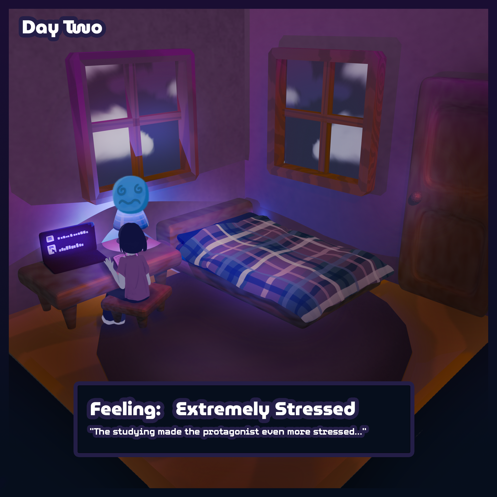

The protagonist is looking over at the exam material, and she is even more stressed than before! She has been trying to study for hours,
but she just can't seem to focus. She has one more full day to prepare for her midterms, but she also wants to destress as much as she can,
in order to clear her mind and be able to focus on her exam.
